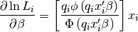
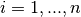

statsmodels.discrete.discrete_model.Probit.score_obs¶
-
Probit.score_obs(params)[source]¶ Probit model Jacobian for each observation
Parameters: params : array-like
The parameters of the model
Returns: jac : ndarray, (nobs, k_vars)
The derivative of the loglikelihood for each observation evaluated at params.
Notes

for observations 
Where
 . This simplification comes from the fact that the
normal distribution is symmetric.
. This simplification comes from the fact that the
normal distribution is symmetric.